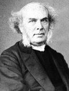

1498 GP391 Here, O My Lord, I See Thee Face to Face _Horatius Bonar 我们在此面对面
▲
|
|
|
|
1 Here, O my Lord, I see Thee face to face;
here would we touch and handle things unseen;
here grasp with firmer hand eternal grace
and all my weariness upon Thee lean.
2 Here would I feed upon the bread of God,
here drink with Thee the royal wine of heav'n;
here would we lay aside each earthly load,
here taste afresh the calm of sin forgiv'n.
3 This is the hour of banquet and of song;
this is the heav'nly table spread for me;
here let me feast, and feasting, still prolong
the brief, bright hour of fellowship with Thee.
4 Too soon we rise, the symbols disappear;
the feast, though not the love, is past and done;
gone are the bread and wine, but Thou art here,
nearer than ever, still my Shield and Sun.
5 Feast after feast thus comes, and passes by;
yet passing, points to the glad feast above;
giving sweet foretaste of the festal joy,
the Lamb's great bridal feast of bliss and love. |
主，在此我願親瞻主聖面，
領受奧祕、接觸靈�堹u見，
更願緊握永亙上主恩典，
一身憂慮辛勞卸主跟前。
主，在此我願享主永生糧，
救贖之杯--恩典自天而降，
在此我願卸下重擔創傷，
體驗赦罪更新、釋放平安。
主筵展開慶典歡樂歌唱，
天宴恩桌重新為眾擺設，
容我嘗用，主愛不斷領享，
珍惜恩主同在相契密切。
主恩典記號深刻不更改，
席筵雖散，神愛卻永伸延，
感恩同餐確認主親臨在，作
我光輝太陽、保障無間。(問奏)
除主以外，我別無他幫助，
無他倚靠，唯仗我主力量，
有主已足！典無盡祝福，
專心仰主大能，心靈剛強。(尾聲) |
|

https://www.zanmeishige.com/tab/25759.html?songbook=1&index=391 |
|
|
|
|
Short Name: |
Horatius Bonar |
|
Full Name: |
Bonar, Horatius, 1808-1889 |
|
Birth Year: |
1808 |
|
Death Year: |
1889 |
Horatius Bonar was born at
Edinburgh, in 1808.

His education was obtained
at the High School, and the University of his native city. He was ordained to
the ministry, in 1837, and since then has been pastor at Kelso. In 1843, he
joined the Free Church of Scotland. His reputation as a religious writer was
first gained on the publication of the "Kelso Tracts," of which he was the
author. He has also written many other prose works, some of which have had a
very large circulation. Nor is he less favorably known as a religious poet and
hymn-writer. The three series of "Hymns of Faith and Hope," have passed
through several editions.
--Annotations of the Hymnal, Charles Hutchins, M.A. 1872
================================
Bonar, Horatius,
D.D. Dr. Bonar's family has had representatives among the clergy of the Church
of Scotland during two centuries and more. His father, James Bonar, second
Solicitor of Excise in Edinburgh, was a man of intellectual power, varied
learning, and deop piety.
Horatius Bonar was born in Edinburgh, Dec. 19th, 1808; and educated at the
High School and the University of Edinburgh. After completing his studies, he
was "licensed" to preach, and became assistant to the Rev. John Lewis,
minister of St. James's, Leith. He was ordained minister of the North Parish,
Kelso, on the 30th November, 1837, but left the Established Church at the
"Disruption," in May, 1848, remaining in Kelso as a minister of the Free
Church of Scotland. The University of Aberdeen conferred on him the doctorate
of divinity in 1853. In 1866 he was translated to the Chalmers Memorial
Church, the Grange, Edinburgh; and in 1883 he was chosen Moderator of the
General Assembly of of the Free Church of Scotland.
Here,O my Lord,I see Thee
仰瞻聖面
普249
https://hymnary.org/text/here_o_my_lord_i_see_thee_face_to_face

|
|
仰瞻聖面
新普頌440
|
1 Here, O my Lord, I see Thee face to face;
here would we touch and handle things unseen;
here grasp with firmer hand eternal grace
and all my weariness upon Thee lean.
2 Here would I feed upon the bread of God,
here drink with Thee the royal wine of heav'n;
here would we lay aside each earthly load,
here taste afresh the calm of sin forgiv'n.
3 This is the hour of banquet and of song;
this is the heav'nly table spread for me;
here let me feast, and feasting, still prolong
the brief, bright hour of fellowship with Thee.
4 Too soon we rise, the symbols disappear;
the feast, though not the love, is past and done;
gone are the bread and wine, but Thou art here,
nearer than ever, still my Shield and Sun.
5 Feast after feast thus comes, and passes by;
yet passing, points to the glad feast above;
giving sweet foretaste of the festal joy,
the Lamb's great bridal feast of bliss and love. |
主，在此我願親瞻主聖面，
領受奧祕、接觸靈�堹u見，
更願緊握永亙上主恩典，
一身憂慮辛勞卸主跟前。
主，在此我願享主永生糧，
救贖之杯--恩典自天而降，
在此我願卸下重擔創傷，
體驗赦罪更新、釋放平安。
主筵展開慶典歡樂歌唱，
天宴恩桌重新為眾擺設，
容我嘗用，主愛不斷領享，
珍惜恩主同在相契密切。
主恩典記號深刻不更改，
席筵雖散，神愛卻永伸延，
感恩同餐確認主親臨在，作
我光輝太陽、保障無間。(問奏)
除主以外，我別無他幫助，
無他倚靠，唯仗我主力量，
有主已足！典無盡祝福，
專心仰主大能，心靈剛強。(尾聲) |
|
|
|
作者：波納（Horatius
Bonar 1808—1889）
180
讚美主－對祂的記念
10 10 10 10
（英225，不同調）
降E大調4/4
1
在此我要，
主，與你面對面，
在此我要用信把握不見，
在此我要更深認識恩典，
將我疲勞都息在主腳前。
2
在此我要喫主所賜美物，
在此我要飲主所遞福杯，
在此我要忘記一切難處，
再嘗一次赦罪平安滋味。
3
我雖有罪，
但你卻有公義，
我雖污穢，
但你卻有寶血；
哦主，
你的寶血將我清洗，
你的公義對付我的罪孽。
4
除你之外，
我無別的幫助；
有你賜恩，
我就不求人惠；
有你的愛，
我已心意滿足；
靠你能力，
我要站住地位。
以下三節在擘餅後唱
5
席撤何速，
表記的物已盡！
酒餅雖無，
拯救的愛未亡！
宴筵已過，
你仍在此親近，
親近有加，
作我萬有君王！
6
看哪，
雲柱今又離地上升，
在這野地又要乘夜前征；
你正招呼，
我們緊緊隨行，
不久我們就到光明天城。
7
上席罷席，
次次我們聚散，
如此聚散，
搖指天上佳筵；
時雖未至，
我們卻已豫嘗
他日天上羔羊婚娶喜宴。
波納弟兄生于1808年12月19日，1889年7月31日被主接去。他生于愛丁堡，但是因為他在“凱爾塞”那個地方工作時，所帶進來的復興，“凱爾塞”所流出來的祝福之深廣影響，所以人們都稱他為“凱爾塞”的波納。另一面因著他在詩歌方面杰出的天才，和他寫的詩歌所帶給神兒女的靈感和祝福，更被人稱為“蘇格蘭的聖詩之王”。
他年輕時，畢業于愛丁堡大學，然後即被差遣到凱爾塞去，就在那里被按立為服事教會之職事。那時，他是在甦格蘭國教所控制的教會中服事，而蘇格蘭國教，已完全墮落到一個非常形式化，而缺少生命的死硬組織中，更可怕的，是國教和政治不能分開，一切事都直接受政府的監督和控制。
當他還在愛丁堡神學院讀書時，他是在當代最有名的一位教授Thomas
Chalmers手下嚴格受教，而Chalmers在當時神學家中是一個非常愛主且有豐盛屬靈生命的人。在他手下所有學生中，波納(Bonar)是最傑出的一位。和Chalmers弟兄在一起那一段時間，實在為波納帶來極大的祝福，而且對他一生的事工具有決定性的影響力。從那個神學院畢業後，年輕的波納即被派到Leith那個地方去做工，那是一個眾人都懼怕去的地方，窮鄉僻壤，加上那地方的人民是以粗野不馴著名的。包納一開始，在事奉中所遇見的真是一個非常可怕的挑戰，但從事後來看。這實在是聖靈對這一個器皿的完整計劃中，非常重要的一部分。多少美麗的見證，多少動人的故事，都是在那一個時期，發生在這一班粗野的人身上。更重要的也是神藉這一個艱難的環境，來訓練波納的品格，並為他的屬靈生命，打下一個美好結實的基礎，而使他在以後一生中，成為在那時代主手中一個鋒利而有效的兵器，來扭轉整個蘇格蘭教會可怕的光景。
到了一八四三年在蘇格蘭國教控制之下的教會中，起了一個巨大的風暴，多少神的兒女，特別許多清心愛主的神的僕人，覺得蘇格蘭國教已完全落在政府控制之下，並且處處干涉各地教會一切的事，而他們認為屬靈的事，不能由那完全不認識主的人，甚至是非基督徒來控制。到了那一個時候，這一個干涉已嚴重扼殺了聚會中的屬靈生命，並且嚴重損傷聖靈的主權，甚至基本的信仰。經過了長期的交涉和掙扎，大批神的兒女，正像摩西時代，神的百姓要逃脫埃及的管轄，在神所應許的迦南美地去一樣，毅然決定脫離國教，到外面去成立合主心意的聚會，那時波納和他的老師Chalmers是其中主要分子，當時一同離開的傳道人有四百人之多，當然還有許多的弟兄姊妹，而在這班人中間的領袖，就是Dr.Chalmers。
他們這一個舉動實在是非常偉大的，因為那一個時代是在專制政府的控制下，他們為著脫離國教，所付的代價，和所忍受的犧牲和痛苦，實在是相當可怕的，他們得被迫放棄他們的一切產業，他們也失掉了所有的薪水，每一個出來的人都沒有一點收入，並且也得放棄並離開還留在國教中的一切親朋好友，因他們被定罪為國教之叛徒，還在國教里的人不能和他們來往，而瞻望前面，他們正像亞伯拉罕一樣︰“出去的時候還不知道往哪里去”，踏入一個十分渺茫、自己完全不知道也沒有把握的境地中。
這四百位神的僕人，那時佔整個國教傳道人的三分之一，他們到了新的地方後，經過了多少流淚痛苦的日子，和艱苦奮斗不怕犧牲的工作，然而因為這一件事出于神，所以神一直幫助他們，大大祝福他們，經過了一段艱苦日子之後，他們就建立了許多真正有聖靈自由，而被聖靈所管理的聚會，並且他們又建立了新的家室，有了自己的醫院，這實在是一個神跡！不僅教會在很短時間中，有力的站了起來，並且他們還差派許多傳教士把福音帶到遠方去。
作曲為郎格南(James
Langran) ，郎格南1835年11月10日，出生在英國倫敦。學生時期曾受教於愛爾蘭管風琴大師約翰•卡爾金(John Calkin)的門下，起初在聖詹姆斯教堂擔任管風琴的指導員，爾後(1856-1909)在托登罕地區(Tottenham)擔任多家教堂的管風琴師，1884年他獲得了牛津大學的音樂學士學位，並且受聘擔任托登罕地區女教師訓練學院的指導教練。郎格南在1909年6月8日死亡。
https://blog.xuite.net/w3817939/hymn/64583713
H09A
苏格兰自由派圣诗
[
Hymn Index
]
苏格兰的安立甘教会直至十九世纪还唱韵文诗篇。只有那些脱离安立甘教会的自由派教会才写圣诗和唱圣诗。这些非国教的教会有长老会、循道会和浸信会，以长老会人多势大。这些教会的思想和作风与低教会相近，注重心灵的虔诚多于崇拜的仪式。圣诗也着重个人与神的关系，以表达内心感情为主。
Bonar, Horatius, 1808-1889
波恩那
［詞作者］
https://hymnary.org/person/Bonar_Horatius

波纳_百度百科
https://www.wikiwand.com/zh/%E6%B3%A2%E7%BA%B3
作者博纳博士
(H．Bonar,1808-1889)是苏格兰长老会中最有名并且影响最大的牧师。他出生于爱丁堡，在大学时随当代长老会神学大师多马．查默斯
(1750-1847)学习，毕业后任苏格兰教会
(即长老会，苏格兰国教)的牧师。1843年追随其师以及一部分教牧人员脱离国教，另行组织成立自由长老会。查默斯去世后，他受聘为爱丁堡查默斯纪念堂的首任牧师，并继承查默斯接任苏格兰自由长老会全国大会会长。他一生事主敬虔，努力工作，牧养群羊，素有勤祷告、勤写作、勤讲道的“三勤”牧师之称。他所写的圣诗为数颇多，著有《旷野之歌》
(1843-1844年)、《圣经圣诗》
(1845年)两本诗集。当时通用的有一百多首。但受千禧年前派①思想的影响，在他的部分圣诗中表现出悲观厌世、忧伤难过的情调，限制了它的广泛流传。
Texts by Horatius Bonar (472)
%20-Hymn%20Music.files/image005.gif "\"sort by Texts by Horatius Bonar (472)\"")
他是苏格兰一位律师詹姆士·波纳的儿子，在爱丁堡出生并接受教育。
波纳弟兄是在十八世纪末叶，主所大用的一位神的仆人，他一生的故事真是多彩多姿，更因着神在他身上，特别培养雕刻的工作，使他不但成为一个有丰盛属灵生
命的人，并且更是使他在那一时代神儿女中，具有巨大的属灵影响力。综合他的一生，主的工作，正好像把他作成为主冠冕上的一颗贵重的宝石，那样光芒逼人。他天赋的才华，和主所给他的属灵恩赐，都是非常广泛的，并且加上为着维护属灵见证，对抗黑暗权势时，不折不挠，不惜牺牲一切的勇敢精神；以及他在建立教会事工上的能力和恩赐，并他在服事神儿女时的那样忠诚勤劳，从不顾及自己的疲乏和健康，总是超过他体力迫切的工作，因之处处在在都使神儿女由衷地敬爱他。他曾在凯尔塞(Kelso)那个地方，带进一个大的复兴，并且他在神儿女中属灵之影响力，一直到他死后，仍运行在神儿女中间。当然我们在这里特别要提起的，乃是他在圣诗这方面的贡献。他也是那一时代的大诗人，他的诗歌一直流传到今天，仍是神儿女最宝贵的产业，和极大的祝福。
波纳弟兄生于一八零八年十二月十九日，而于一八八九年七月三十一日被主接去。他生于爱丁堡，但是因为他在“凯尔塞”那个地方工作时，所带进来的复兴，“凯尔塞”所流出来的祝福之深广影响，所以人们都称他为“凯尔塞”的波纳。另一面因着他在诗歌方面杰出的天才，和他写的诗歌所带给神儿女的灵感和祝福，更被人称为“苏格兰的圣诗之王”。
他年轻时，毕业于爱丁堡大学，然后即被差遣到凯尔塞去，就在那里被按立为服事教会之职事。那时，他是在苏格兰国教所控制的教会中服事，而苏格兰国教，已完全堕落到一个非常形式化，而缺少生命的死硬组织中，更可怕的，是国教和政治不能分开，一切事都直接受政府的监督和控制。
现今我们要提到一点他家庭的背景，他是出生于一个非常虔诚，而且有名的苏格兰家族里，从一七六三年开始，他整个家族在苏格兰国教里有巨大的贡献和影响力，到了波纳这一代，他有两个兄弟也都是当时非常有能力的神的仆人，在苏格兰的名声都不在波纳以下。
当他还在爱丁堡神学院读书时，他是在当代最有名的一位教授Thomas Chalmers手下严格受教，而Chalmers在当时神学家中是一个非常爱主且有丰盛属灵生命的人。在他手下所有学生中，波纳(Bonar)是最杰出的一位。和Chalmers弟兄在一起那一段时间，实在为波纳带来极大的祝福，而且对他一生的事工具有决定性的影响力。从那个神学院毕业后，年轻的波纳即被派到Leith那个地方去做工，那是一个众人都惧怕去的地方，穷乡僻壤，加上那地方的人民是以粗野不驯著名的。波纳一开始，在事奉中所遇见的真是一个非常可怕的挑战，但从事后来看。这实在是圣灵对这一个器皿的完整计划中，非常重要的一部分。多少美丽的见证，多少动人的故事，都是在那一个时期，发生在这一班粗野的人身上。更重要的也是神藉这一个艰难的环境，来训练波纳的品格，并为他的属灵生命，打下一个美好结实的基础，而使他在以后一生中，成为在那时代主手中一个锋利而有效的兵器，来扭转整个苏格兰教会可怕的光景。
到了一八四三年在苏格兰国教控制之下的教会中，起了一个巨大的风暴，多少神的儿女，特别许多清心爱主的神的仆人，觉得苏格兰国教已完全落在政府控制之下，并且处处干涉各地教会一切的事，而他们认为属灵的事，不能由那完全不认识主的人，甚至是非基督徒来控制。到了那一个时候，这一个干涉已严重扼杀了聚会中的属灵生命，并且严重损伤圣灵的主权，甚至基本的信仰。经过了长期的交涉和挣扎，大批神的儿女，正像摩西时代，神的百姓要逃脱埃及的管辖，在神所应许的迦南美地去一样，毅然决定脱离国教，到外面去成立合主心意的聚会，那时波纳和他的老师Chalmers是其中主要分子，当时一同离开的传道人有四百人之多，当然还有许多的弟兄姊妹，而在这班人中间的领袖，就是Dr.Chalmers。他们这一个举动实在是非常伟大的，因为那一个时代是在专制政府的控制下，他们为着脱离国教，所付的代价，和所忍受的牺牲和痛苦，实在是相当可怕的，他们得被迫放弃他们的一切产业，他们也失掉了所有的薪水，每一个出来的人都没有一点收入，并且也得放弃并离开还留在国教中的一切亲朋好友，因他们被定罪为国教之叛徒，还在国教里的人不能和他们来往，而瞻望前面，他们正像亚伯拉罕一样：“出去的时候还不知道往哪里去”，踏入一个十分渺茫、自己完全不知道也没有把握的境地中。这四百位神的仆人，那时占整个国教传道人的三分之一，他们到了新的地方后，经过了多少流泪痛苦的日子，和艰苦奋斗不怕牺牲的工作，然而因为这一件事出于神，所以神一直帮助他们，大大祝福他们，经过了一段艰苦日子之后，他们就建立了许多真正有圣灵自由，而被圣灵所管理的聚会，并且他们又建立了新的家室，有了自己的医院，这实在是一个神迹！不仅教会在很短时间中，有力的站了起来，并且他们还差派许多传教士把福音带到远方去。
波纳实在是一位有杰出领导才能的属灵首领，因着主在他身上的雕刻和工作，处处他都能在他的性格中，表现出耶稣基督的伟大，经过了和苏格兰的国教这样严重的冲突和分离，等待神的工作稳定之后，他就伸出手来，向原来教会寻求和谐，因着他的才能和谦卑，从不纪念国教给他们的痛苦和折磨，他终于弥补了神儿女中分裂的伤痕，而使圣徒们能和谐的来往。所以他们能很喜乐地称他们是一班和一切圣徒都能合一的教会，不论是爱他们或是反对他们的！
波纳本人一直留在“凯尔塞”教会中服事，生命和能力从那里一直涌流出来，影响并帮助各地圣徒，直到一八六六年之后，他又迁至爱丁堡，在
Chalmers Memorial Church in Edinburgh里面服事，因着他在凯尔塞服事所带来的复兴，和他本人属灵生命的伟大和丰盛，在一八八三年他已成为整个团体中的首领，并且是一位被众教会所爱戴所敬重的神仆。
当他投身于工作时，他常被人形容为精力无穷之泉源，不知疲乏不顾身体劳苦服事神的儿女，而他从天上来的灵感也是如此，他是一个多产的作者，在那一时期间，他也常访问伦敦，常被邀请在Mildmay
Park Confernce作讲员，而在那时代中，只有少数人能得到在那聚会中讲道这一个荣誉，于是波纳的声望和属灵影响力，更广泛深入到全国神儿女中间。那时他也开始出一本属灵杂志季刊叫做〈Journal
of Prophecy〉这本季刊，也给当时神儿女，带来远大的属灵影响力。
他的著作很多，其中尤以〈一宿虽有哭泣〉最能说明圣徒们。内容说到“神的家”的意义：我们生在神的家中，在万有中被分别出来，为要呼召我们进入与父子圣灵伟大的交通里面。另一意义乃是：要率领众子进荣耀，这是主在神的家中最大的责任；又说到神的家(教会)就是基督的身体，这一个身体就是基督丰满的彰显，神永世的计划就是要让基督的丰满，借着教会充满万有，完成神的计划。今天主在神的家中一切的工作，都是向着这一个荣耀的目的。虽然经历许多损失使我们痛苦，但“一宿虽有哭泣，早晨便必欢呼”，这本书不仅帮助许多神的儿女，更是波纳一生经历的一个缩影。
社会评价编辑
现今让我们回到主题谈到他的诗歌，他写诗的历史开始得很早，所以他写的诗很多，曾出版了好几本诗集，在那五十年之间，他的诗歌在英国是最普遍被神儿女所使用的，由此可知他的诗歌对神儿女的影响力有多大。他的诗歌中，脍炙人口的就有六百首之多，他有一个习惯，无论工作和休息，无论在何处，他身边总是带着一本笔记簿，无论什么时候，他一得着主的亮光，灵感在他里面就像泉源涌出，他就立刻把这一切都记在他的本子里面，所以每次我们唱他写的诗时，总是觉得有那样丰富的灵感，而且觉得从上头来的能力，他不大注意写诗的小节，不拘泥于韵文的完全，而且他也无意在写完后再作修正的工作，就付梓出版。等他去世之后，他的孩子们说，他从不注意诗歌的结构和词藻，只是全力发挥所捕捉到的灵感，并全力把从主所得的资讯，用诗歌表达出来。他写的诗歌种类也极广，无论在福音，生命以及其他各方面。他都有非常美好的诗歌，而在这一切不同种类的诗歌当中，我们都能摸着一个共同的特点，就是都洋溢着神向我们的大爱，和圣徒对神的挚爱。他曾出过好些诗集，最有名的一集叫做信心和盼望的诗集。另外他的诗歌有一个特点，他不大在诗歌中，表达他自己的经历和感觉，而只注意把人带到主面前，并把人带回到当初教会最古老的信心和盼望里去，而这些，正是现今神的儿女所失去的。
下列几首诗歌，是在他这许多诗歌中特别突出的：
〈听见主的声音〉
和另一首是〈主，在此我要与你面对面〉后者是有关于擘饼用的诗歌，很少有一首擘饼诗歌能超过这一首。他写此诗时，正是当他在凯尔塞初期时，一次擘饼聚会后，主那样与他们同在，甚至每一个人都因着主的爱而忘记了自己的存在，会后圣灵就把这诗歌放在他心中。
另外一首：
〈将你生命充满我〉
，诗歌内充满了祷告和赞美的灵。
〈起来作工〉(“Go，Labour
On”)，
是当他来Leith这一个最坎坷艰难的工厂里，埋头工作时，许多同工都因着工作环境太为难，而觉得气馁灰心，为此在一次祷告会之后，波纳就写了这首诗，为着激励他和同工，靠着主在艰难中一起努力往前。
〈求你拣选我道路〉(“The
Way Not Mine，O
Lord”)
(《圣徒诗歌》第365首)和“Beloved，Let
Us Love”这两首诗可说是他诗歌中的代表作。
还有一首诗歌，是他自己所最喜欢的“when
the weary seeking rest”，是根据历代志下六章二十九、三十两节：“你的民以色列，或是众人，或是一人，自觉灾祸甚苦，向这殿举手，无论祈求什么，祷告什么，求你从天上你的居所垂听赦免，你是知道人心的，要照各人所行的待他们”所写的。
History of Hymns:
"Here, O my Lord, I See Thee"
"Here, O my Lord, I See Thee"
Horatius Bonar
The United Methodist Hymnal, No. 623
Horatius Bonar
“Here, O my Lord, I see Thee face to face;
Here would I touch and handle things unseen;
Here grasp with firmer hand eternal grace,
And all my weariness upon Thee lean.”
Horatius Bonar (1808-1899) is the best-known hymn writer from the Free Church
of Scotland. He was devoted to ministry and scholarship, and wrote many
evangelical tracts and devotionals.
Born on Dec. 19, 1808 in Edinburgh, Scotland, Bonar was welcomed into a
family with a long line of ministers who served 364 years in the Church of
Scotland. He was educated at the University of Edinburgh, studied under the Rev.
John Lewis at St. James in Leitn and was ordained to be minister at North Parish
at Kelso.
During the “Disruption” in 1843, the evangelicals, including Bonar, pulled
out of the national Church of Scotland to form the Free Church of Scotland.
After 27 years at Kelso, Bonar moved to Chalmers Memorial Church in Edinburgh, a
church that was erected for Dr. Thomas Chalmers, his friend and leader of the
Free Church movement in Scotland.
In 1883, he was elected the Moderator of the General Assembly of the Free
Church of Scotland.
Bonar’s hymns truly convey both subjective emotion and a personal grasp of
divine truth that he gleaned through his biblical studies and constant prayer
life: a free and universal divine grace and communion with God through the
Eucharist.
The poet’s output included 600 hymns, many of which were widely accepted in
Scotland and beyond. Four are still in regular use: “I heard the voice of Jesus
say,” “Here, O My Lord, I see Thee,” “Blessings and Honor” and “I Lay My Sins on
Jesus.”
Bonar died in Edinburgh on July 31, 1889 at the age of 81 and was buried in
the Conangate Churchyard.
Bonar’s older brother John James Bonar was a pastor at St. Andrews Free
Church in Greenock, Scotland. After each communion service, J. J. Bonar would
produce a service leaflet with hymns attached. He asked Horatius to compose a
hymn, which was printed in the leaflet for the first Sunday in October 1855
under the title, “This do in Remembrance of Me.”
The original hymn, with 11 stanzas, was included in Bonar’s hymnbook Hymns of
Faith and Hope (1857). The original stanzas are still in use in many hymnals,
including The Hymnal 1982, Hymns Ancient and Modern, The Lutheran Book of
Worship and The United Methodist Hymnal. Of the original 11 stanzas, the
majority of the current hymnbooks, including The United Methodist Hymnal,
include four to five.
This communion hymn is filled with Eucharist images: partaking in the “Bread
of God” and “wine of heaven” suggest a sense of “the burden of sin removed.” The
elements point beyond themselves to a greater reality as we sing the paradox of
communion—a time when we “touch and handle things unseen.”
Bonar’s emotional vision of Jesus as a personal and loving friend is conveyed
through his language:
“I have no help but Thine; nor do I need,
Another arm save Thine to lean upon;
It is enough, my Lord, enough indeed;
My strength is in Thy might, Thy might alone.”
The last stanza strongly expresses an eschatological vision. Hymnologist
Albert Bailey comments in his book The Gospel in Hymns, “These recurring feasts
hint at the eternal feast in heaven when the marriage of the Lamb and His bride
the Church will be celebrated.”
Bonar, a celebrated Scottish poet and preacher, will be remembered for the
wonderful imagery in his hymns and his devotion to ministry. The stanza that
most fittingly comments on his life and ministry is one that illustrates his
utter dependence on and trust in God:
“Jesus, O Son of God, I build
on what Thy cross has done for me;
there both my death and life I read;
my guilt, my pardon there I see.”
Ms. Bertwell is a student of Dr. Michael Hawn and a candidate for the master
of sacred music degree at Perkins School of Theology.
https://www.umcdiscipleship.org/resources/history-of-hymns-here-o-my-lord-i-see-thee
INTRO.:
A
song that was intended specifically for the Lord’s Supper in our Lord’s day
worship services is "Here, O My Lord, I See Thee Face To Face." The text was
written by Horatius Bonar (1808-1889). Originally in ten stanzas, it was
first printed in leaflet form for distribution to the members of the St. Andrews
Free Church at Greenock, Scotland, when the author was on a yearly visit to his
older brother, John J. Bonar, who was minister there and requested the hymn, in
1855, and then a slightly revised form was included in Horatio’s 1857 Hymns
of Faith and Hope. Several tunes have been used with the song, but one of
the more common ones (Penetentia) was composed by Edward Dearle, who was born on
Mar. 2, 1806, at Cambridge, England. A chorister at King’s College, Trinity, and
St. John’s College, Cambridge, He attended Cambridge, from which he received a
Mus. D. in 1842. Afterwards he became organist at St. Paul’s in Deptford at the
age of 21, and from 1835 to 1864 at Newark-upon-Trent, and produced a large body
of music, including anthems, oratorios, and service music.
Originally used with "Weary of earth, and laden with my sin," the tune first
appeared in the 1874 Church
Hymns With Tunes edited by Arthur S. Sullivan. After leaving
Newark-upon-Trent, Dearle moved to Camberwell near London where he resided until
his death in London on Mar. 21, 1891. Among hymnbooks published during the
twentieth century by members of the Lord’s church for use in churches of Christ,
the text, with three stanzas and a tune (Raynolds or Consolation) by Felix
Mendelssohn usually associated with Anna Waring’s "We Would See Jesus," appeared
in the 1921 Great
Songs of the Church (No. 1) and the 1937 Great
Songs of the Church No. 2 both edited by E. L. Jorgenson; and
the 1963 Christian
Hymnal edited by J. Nelson Slater. Today this same version is
found in the 1986 Great
Songs Revised edited by Forrest M. McCann, and with one
additional stanza in the 1992 Praise
for the Lord edited by John P. Wiegand. Most books today use
no more than six stanzas, the most common of which are given below.
The song focuses upon several aspects of the Lord’s supper and what it means to
Christians.
I. Stanza 1 mentions the communion with the Lord
"Here, O my Lord, I see Thee face to face; Here would I touch and handle things
unseen;
Here, grasp with firmer hand th’eternal grace, And all my weariness upon Thee
lean."
A. In the Lord’s supper, it is as though we come to Christ "face to face"
because it is a communion with His body and His blood: 1 Cor. 10.16
B. Thus, we are, spiritually speaking, touching and handling things unseen: 2
Cor. 4.16-18
C. This reminds us of God’s eternal grace by which we are saved: Eph. 2.8-9
II. Stanza 3 mentions the elements of the feast
"Here would I feed upon the bread of God; Here drink with Thee the royal wine of
heaven;
Here would I lay aside each earthly load, Here taste afresh the calm of sin
forgiven."
A. The "bread of God" here refers to the unleavened bread, which in turn
reminds us of Christ who was the bread come down from heaven: Matt. 26.26, Jn.
6.51
B. The "royal wine of heaven" (some object to using the word "wine" but since
it is generic, it does not necessarily identify a fermented beverage but can
simply mean fresh grape juice) refers to the cup or fruit of the vine: Matt.
26.27-29
C. The elements of the supper reminds us that it is the blood of Christ that
forgives us of our sin: 1 Jn. 1.7
III. Stanza 4 mentions the dependence on the Lord the feast implies
"I have no help but Thine; nor do I need Another arm save Thine to lean upon;
It is enough, my Lord, enough indeed; My strength is in Thy might, Thy might
alone."
A. The Lord’s supper is a confession that we have no help but that of the Lord:
Ps. 33.20
B. Another way of saying this is that He is the only arm that we can lean upon:
Ps. 77.15
C. Therefore, the supper reminds us that our strength is in His might alone:
Eph. 6.10
IV. Stanza 6 mentions the remembrance of the feast
"Mine is the sin, but Thine the righteousness: Mine is the guilt, but Thine the
cleansing blood;
Here is my robe, my refuge, and my peace; Thy Blood, Thy righteousness, O Lord
my God!"
A. In the feast we remember that we are sinners: Rom. 3.23
B. Yet, we also remember the cleansing blood that Jesus shed on the cross: Rev.
7.14
C. Thus, we remember that we are not saved by our own righteousness, but the
righteousness which is from God by faith in Christ as a result of His sacrifice
on the cross: Phil. 3.9
V. Stanza 7 mentions the love demonstrated by the feast
"Too soon we rise; the symbols disappear; The feast, though not the love, is
past and gone.
The bread and wine remove, but Thou art here, Nearer than ever, still my Shield
and Sun."
A. Even after the Lord’s supper is over, we can still remember the love of God
in sending Christ by which we are saved: Jn. 3.16
B. While the bread and the cup are reminders of what the Lord has done for us,
we must continue to think of His love and thus know that He continues to dwell
in our hearts by faith: Eph. 3.17
C. Thus, He will draw nearer to us as we draw nearer to Him: Jas. 4.7
VI. Stanza 8 mentions what the feast points us toward
"Feast after feast thus comes and passes by; Yet, passing, points to the glad
feast above,
Giving sweet foretaste of the festal joy, The Lamb’s great bridal feast of bliss
and love."
A. Feast after feast thus comes because we know that it was upon the first day
of the week that the disciples in the first century came to break bread and each
week has a first day: Acts 20.7
B. Each time we observe the Lord’s supper, it not only reminds us of something
in the past–the death of Christ, but it also points to something in the
future–the coming of the Lord: 1 Cor. 11.23-26
C. Thus, it serves as a foretaste of the perfect communion that the saints will
have with Christ in heaven, when the marriage feast of the Lamb and His bride
the church will be celebrated: Rev. 19.9, 21.1-5
CONCL.:
Two stanzas which are not as commonly used are:
2. "This is the hour of banquet and of song; This is the heavenly table spread
for me;
Here let me feast, and feasting, still prolong The hallowed hour of fellowship
with Thee."
5. "I have no wisdom save in Him Who is My Wisdom and my Teacher both in One;
No wisdom can I lack while Thou art wise; No teaching do I crave save Thine
alone."
We must be careful that we do not give too mystical an interpretation to the
Lord’s supper. However, it should be helpful for me, when I partake each first
day of the week, to tell the Savior, at least in my mind, "Here, O My Lord, I
See Thee Face To Face."
https://hymnstudiesblog.wordpress.com/2008/06/16/quothere-o-my-lord-i-see-thee-face-to-facequot/
十、波納Horatius Bonar（1808—1889）
詩人小傳
波納弟兄是在十八世紀末葉，主所大用的一位神的僕人，他一生的故事真是多采多姿，更因著神在他身上，特別培養雕刻的工作，使他不但成為一個有豐盛屬靈生命的人，並且更是使他在那一時代神兒女中，具有巨大的屬靈影響力。綜合他的一生，主的工作，正好像把他作成為主冠冕上的一顆貴重的寶石，那樣光芒逼人。他天賦的才華，和主所給他的屬靈恩賜，都是非常廣泛的，並且加上為著維護屬靈見證，對抗黑暗權勢時，不折不撓，不惜犧牲一切的勇敢精神；以及他在建立教會事工上的能力和恩賜，並他在服事神兒女時的那樣忠誠勤勞，從不顧及自己的疲乏和健康，總是超過他體力迫切的工作，因之處處在在都使神兒女由衷地敬愛他。他曾在凱爾塞（Kelso）那個地方，帶進一個大的復興，並且他在神兒女中屬靈之影響力，一直到他死後，仍運行在神兒女中間。當然我們在這裡特別要提起的，乃是他在聖詩這方面的貢獻。他也是那一時代的大詩人，他的詩歌一直流傳到今天，仍是神兒女最寶貴的產業，和極大的祝福。
波納弟兄生於一八○八年十二月十九日，而於一八八九年七月三十一日被主接去。他生於愛丁堡，但是因為他在“凱爾塞”那個地方工作時，所帶進來的復興，“凱爾塞”所流出來的祝福之深廣影響，所以人們都稱他為“凱爾塞”的波納。另一面因著他在詩歌方面傑出的天才，和他寫的詩歌所帶給神兒女的靈感和祝福，更被人稱為“蘇格蘭的聖詩之王”。
他年輕時，畢業于愛丁堡大學，然後即被差遣到凱爾塞去，就在那裡被按立為服事教會之職事。那時，他是在蘇格蘭國教所控制的教會中服事，而蘇格蘭國教，已完全墮落到一個非常形式化，而缺少生命的死硬組織中，更可怕的，是國教和政治不能分開，一切事都直接受政府的監督和控制。
現在我們要提到一點他家庭的背景，他是出生於一個非常虔誠，而且有名的蘇格蘭家族裡，從一七六三年開始，他整個家族在蘇格蘭國教裡有巨大的貢獻和影響力，到了波納這一代，他有兩個兄弟也都是當時非常有能力的神的僕人，在蘇格蘭的名聲都不在波納以下。
當他還在愛丁堡神學院讀書時，他是在當代最有名的一位教授Thomas
Chalmers手下嚴格受教，而Chalmers在當時神學家中是一個非常愛主且有豐盛屬靈生命的人。在他手下所有學生中，波納（Bonar）是最傑出的一位。和Chalmers弟兄在一起那一段時間，實在為波納帶來極大的祝福，而且對他一生的事工具有決定性的影響力。從那個神學院畢業後，年輕的波納即被派到Leith那個地方去做工，那是一個眾人都懼怕去的地方，窮鄉僻壤，加上那地方的人民是以粗野不馴著名的。波納一開始，在事奉中所遇見的真是一個非常可怕的挑戰，但從事後來看。這實在是聖靈對這一個器皿的完整計畫中，非常重要的一部分。多少美麗的見證，多少動人的故事，都是在那一個時期，發生在這一班粗野的人身上。更重要的也是神藉這一個艱難的環境，來訓練波納的品格，並為他的屬靈生命，打下一個美好結實的基礎，而使他在以後一生中，成為在那時代主手中一個鋒利而有效的兵器，來扭轉整個蘇格蘭教會可怕的光景。
到了一八四三年在蘇格蘭國教控制之下的教會中，起了一個巨大的風暴，多少神的兒女，特別許多清心愛主的神的僕人，覺得蘇格蘭國教已完全落在政府控制之下，並且處處干涉各地教會一切的事，而他們認為屬靈的事，不能由那完全不認識主的人，甚至是非基督徒來控制。到了那一個時候，這一個干涉已嚴重扼殺了聚會中的屬靈生命，並且嚴重損傷聖靈的主權，甚至基本的信仰。經過了長期的交涉和掙扎，大批神的兒女，正像摩西時代，神的百姓要逃脫埃及的管轄，在神所應許的迦南美地去一樣，毅然決定脫離國教，到外面去成立合主心意的聚會，那時波納和他的老師Chalmers是其中主要分子，當時一同離開的傳道人有四百人之多，當然還有許多的弟兄姊妹，而在這班人中間的領袖，就是Dr.Chalmers。他們這一個舉動實在是非常偉大的，因為那一個時代是在專制政府的控制下，他們為著脫離國教，所付的代價，和所忍受的犧牲和痛苦，實在是相當可怕的，他們得被迫放棄他們的一切產業，他們也失掉了所有的薪水，每一個出來的人都沒有一點收入，並且也得放棄並離開還留在國教中的一切親朋好友，因他們被定罪為國教之叛徒，還在國教裡的人不能和他們來往，而瞻望前面，他們正像亞伯拉罕一樣：“出去的時候還不知道往哪裡去”，踏入一個十分渺茫、自己完全不知道也沒有把握的境地中。這四百位神的僕人，那時占整個國教傳道人的三分之一，他們到了新的地方後，經過了多少流淚痛苦的日子，和艱苦奮鬥不怕犧牲的工作，然而因為這一件事出於神，所以神一直幫助他們，大大祝福他們，經過了一段艱苦日子之後，他們就建立了許多真正有聖靈自由，而被聖靈所管理的聚會，並且他們又建立了新的家室，有了自己的醫院，這實在是一個神跡！不僅教會在很短時間中，有力的站了起來，並且他們還差派許多傳教士把福音帶到遠方去。
波納實在是一位有傑出領導纔能的屬靈首領，因著主在他身上的雕刻和工作，處處他都能在他的性格中，表現出耶穌基督的偉大，經過了和蘇格蘭的國教這樣嚴重的衝突和分離，等待神的工作穩定之後，他就伸出手來，向原來教會尋求和諧，因著他的纔能和謙卑，從不紀念國教給他們的痛苦和折磨，他終於彌補了神兒女中分裂的傷痕，而使聖徒們能和諧的來往。所以他們能很喜樂地稱他們是一班和一切聖徒都能合一的教會，不論是愛他們或是反對他們的！
波納本人一直留在“凱爾塞”教會中服事，生命和能力從那裡一直湧流出來，影響並幫助各地聖徒，直到一八六六年之後，他又遷至愛丁堡，在Chalmers Memorial
Church in
Edinburgh裡面服事，因著他在凱爾塞服事所帶來的復興，和他本人屬靈生命的偉大和豐盛，在一八八三年他已成為整個團體中的首領，並且是一位被眾教會所愛戴所敬重的神僕。
當他投身于工作時，他常被人形容為精力無窮之泉源，不知疲乏不顧身體勞苦服事神的兒女，而他從天上來的靈感也是如此，他是一個多產的作者，在那一時期間，他也常訪問倫敦，常被邀請在Mildmay
Park
Confernce作講員，而在那時代中，只有少數人能得到在那聚會中講道這一個榮譽，於是波納的聲望和屬靈影響力，更廣泛深入到全國神兒女中間。那時他也開始出一本屬靈雜誌季刊叫做〈Journal
of Prophecy〉這本季刊，也給當時神兒女，帶來遠大的屬靈影響力。
他的著作很多，其中尤以〈一宿雖有哭泣〉最能幫助聖徒們。內容說到“神的家”的意義：我們生在神的家中，在萬有中被分別出來，為要呼召我們進入與父子聖靈偉大的交通裡面。另一意義乃是：要率領眾子進榮耀，這是主在神的家中最大的責任；又說到神的家（教會）就是基督的身體，這一個身體就是基督豐滿的彰顯，神永世的計畫就是要讓基督的豐滿，藉著教會充滿萬有，完成神的計畫。今天主在神的家中一切的工作，都是向著這一個榮耀的目的。雖然經歷許多損失使我們痛苦，但“一宿雖有哭泣，早晨便必歡呼”，這本書不僅幫助許多神的兒女，更是波納一生經歷的一個縮影。
現在讓我們回到主題談到他的詩歌，他寫詩的歷史開始得很早，所以他寫的詩很多，曾出版了好幾本詩集，在那五十年之間，他的詩歌在英國是最普遍被神兒女所使用的，由此可知他的詩歌對神兒女的影響力有多大。他的詩歌中，膾炙人口的就有六百首之多，他有一個習慣，無論工作和休息，無論在何處，他身邊總是帶著一本筆記簿，無論什麼時候，他一得著主的亮光，靈感在他裡面就像泉源湧出，他就立刻把這一切都記在他的本子裡面，所以每次我們唱他寫的詩時，總是覺得有那樣豐富的靈感，而且覺得從上頭來的能力，他不大注意寫詩的小節，不拘泥于韻文的完全，而且他也無意在寫完後再作修正的工作，就付梓出版。等他去世之後，他的孩子們說，他從不注意詩歌的結構和詞藻，只是全力發揮所捕捉到的靈感，並全力把從主所得的信息，用詩歌表達出來。他寫的詩歌種類也極廣，無論在福音，生命以及其他各方面。他都有非常美好的詩歌，而在這一切不同種類的詩歌當中，我們都能摸著一個共同的特點，就是都洋溢著神向我們的大愛，和聖徒對神的摯愛。他曾出過好些詩集，最有名的一集叫做信心和盼望的詩集。另外他的詩歌有一個特點，他不大在詩歌中，表達他自己的經歷和感覺，而只注意把人帶到主面前，並把人帶回到當初教會最古老的信心和盼望裡去，而這些，正是現在神的兒女所失去的。
下列幾首詩歌，是在他這許多詩歌中特別突出的：
〈聽見主的聲音〉和另一首是〈主，在此我要與禰面對面〉後者是有關於擘餅用的詩歌，很少有一首擘餅詩歌能超過這一首。他寫此詩時，正是當他在凱爾塞初期時，一次擘餅聚會後，主那樣與他們同在，甚至每一個人都因著主的愛而忘記了自己的存在，會後聖靈就把這詩歌放在他心中。
另外一首：〈將禰生命充滿我〉，詩歌內充滿了禱告和讚美的靈。
〈起來作工〉（“Go，Labour On”），是當他來Leith這一個最坎坷艱難的工廠裡，埋頭工作時，許多同工都因著工作環境太為難，而覺得氣餒灰心，為此在一次禱告會之後，波納就寫了這首詩，為著激勵他和同工，靠著主在艱難中一起努力往前。
〈求禰揀選我道路〉（“The Way Not Mine，O Lord”）（《聖徒詩歌》第365首）和“Beloved，Let Us
Love”這兩首詩可說是他詩歌中的代表作。
還有一首詩歌，是他自己所最喜歡的“when the weary seeking
rest”，是根據歷代志下六章二十九、三十兩節：“禰的民以色列，或是眾人，或是一人，自覺災禍甚苦，向這殿舉手，無論祈求什麼，禱告什麼，求禰從天上禰的居所垂聽赦免，禰是知道人心的，要照各人所行的待他們”所寫的。
詩歌介紹
下面我們選出四首詩歌作為他的代表作，介紹在後：
—、〈主，在此，我要與禰面對面〉
“Here，O My Lord，I See Thee Face to Face”
（《聖徒詩歌》第685首）
（一）主，在此，我要與禰面對面，
在此，我要用信把握不見；
在此，我要更深認識恩典，
將我疲勞都息在主腳前。
（二）在此，我要吃主所賜美物，
在此，我要飲主所遞福杯；
在此，我要忘記一切難處，
再嘗一次赦罪平安滋味。
（三）我雖有罪，但禰卻有公義，
我雖污穢，但禰卻有寶血；
哦，主，禰的寶血將我清洗，
禰的公義，對付我的罪孽。
（四）除禰之外，我無別的幫助，
有禰賜恩，我就不求人惠；
有禰的愛，我已心滿意足，
靠禰能力，我要站住地位。
（五）席撤何速，表記的物已盡，
酒餅雖無，拯救的愛未亡；
宴筵已過，禰仍在此親近，
親近有加，作我萬有君王。
（六）上席，罷席，次次我們聚散，
如此聚散，遙指天上佳筵；
時雖未至，我們卻已預嘗
他日天上羔羊嫁娶喜宴。
（七）看哪，雲柱今又離地上升，
在這野地又要乘夜前征；
禰正招呼，我們緊緊隨行，
不久我們就到光明天城。
二、〈哈利路亞十架得勝〉
“Hallelujah for the Cross”
（《聖徒詩歌》第106首）
（一）十架永遠得勝，哈利路亞！哈利路亞！
十架將敵除盡，哈利路亞！哈利路亞！
陰府雖然兇猛，世界雖然翻騰，
肉體雖然逞能，十架使我仍誇勝！
（二）十架是我生命，哈利路亞，哈利路亞！
十架賜我權柄，哈利路亞！哈利路亞！
勝過人情、自己，勝過世界勢力，
勝過一切仇敵，十架使我勝無已！
（三）十架是我旌旗，哈利路亞！哈利路亞！
我要永遠舉起，哈利路亞！哈利路亞！
軟弱變為剛強，下沉變為高昂，
黑暗變為明亮，十架使我得釋放！
（副）哈利路亞！哈利路亞！基督十架永得勝！
哈利路亞！哈利路亞！仗這十架我誇勝！
三、〈沒有血，沒有壇〉
“No Blood，No Altar Now”
（《聖徒詩歌》第25首）
（一）沒有血，沒有壇，祭祀已成過去；
沒有煙冒，沒有火燃，犧牲再無必需。
更美的血流自更貴的脈。
洗淨人的污穢，清償人的罪債。
（二）神，我們感謝禰，為禰兒子的血，
靠它我們被稱為義，靠它我們得捷。
大勝地獄、死亡、黑暗勢力；
毋需兩次爭戰，不留一個仇敵。
（三）神，我們感謝禰，因有天來恩典；
漫過我們最闊不義，赦免最深罪愆。
我們要讚美禰所有的愛，
像禰榮耀、權柄、能力，存到萬代。
（四）神，我們感謝禰，因為盼望堅固；
下沉的靈藉以再起，直至晨曦顯露。
有福的盼望，何等的鼓舞；
最疲倦的曠野，最艱難的道路。
（五）神，我們感謝禰，為那榮耀之冠，
並非只有一時美麗，轉眼即已枯殘，
乃是像寶座不朽到永遠，
樂哉，能向寶座投下所有冠冕。
四、〈非我所是，主啊，乃是禰是〉
（一）非我所是，主啊，乃是禰是，
只有這個會叫我心安寧，
禰（非我）愛會叫疑惑消失，
會叫起伏心懷風平波靜。
（二）他今賜福並要永遠賜福，
他今救我並永遠救我；
他要扶我在此無倚中途，
他要領我危關平安渡過。
（三）我主，我神，我的對禰認識，
使我心滿平安，口滿歌唱；
禰是我的生命，喜樂杖子，
倚身於禰使我軟弱變強。
（四）我是缺乏饑渴，我這心懷，
焦慕這裡所難尋的甘甜；
戀人逐漸離開，他們離開，
留下空隙為著更為可戀。
（五）更多的禰求禰時刻啟迪，
更多禰的榮擢，我主我神；
更多的禰在於恩典能力，
更多禰的憐憫賜給我身。
其他尚有：
五、〈我們從前所有〉（《聖徒詩歌》第202首）
六、〈為著這餅和這杯〉（《聖徒詩歌》第683首）
七、〈我們聽見慈愛之聲〉（《聖徒詩歌》第30首）
八、〈求禰揀選我道路〉（《聖徒詩歌》第365首）
九、〈殷勤做工竭力效命〉（“GO，Labour On”）
十、〈我聽見耶穌溫柔聲音〉(“I Heard the Voice of Jesus Say”)
十—、〈我主我神受稱揚〉(“Bless Be God，Our God”)
十二、〈我本流浪羔羊〉(“I Was A Wandering Sheep”)
十三、〈決非絕望而來〉（“No，Not Despairingly”）
十四、“Glory Be to the Father”
十五、“For His Love Floweth On”
十六、“O Everlasting Light”
十七、“Fill Thou My Life，O Lord My God”
十八、“Not to Ourselves Again”
十九、“Jesus Sun and Shield Art Thou”
二十、“Begin the Day with God”
二十一、“I Lay My Sins On Jesus”
二十二、〈非此雙手所行〉（“Not What These Hands Have Done”）
── 史伯誠《詩人與詩歌》
https://www.churchinmarlboro.org/Biblestudy/Topics/75Worship/75HT10.htm